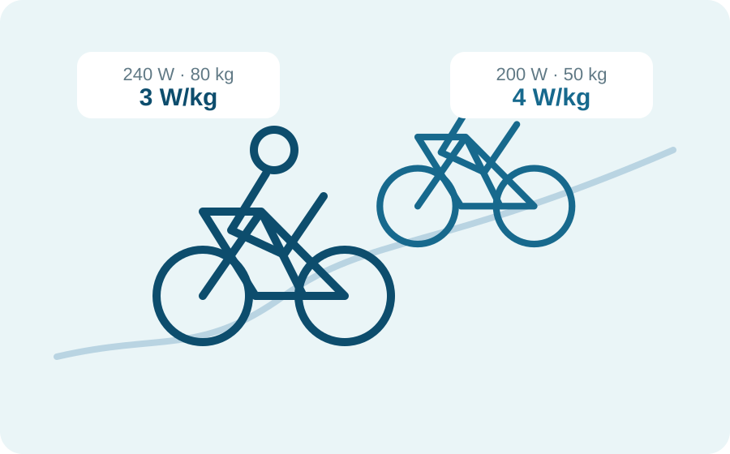

Capítulo 2
¿Qué es el vatio/kilo y por qué importa en ciclismo indoor?
Los vatios nos dicen cuánta potencia generamos. El vatio/kilo nos ayuda a entender qué representa esa potencia para cada persona.

01
Los vatios, por sí solos, no cuentan toda la historia
Imagina dos personas: una mantiene 240 vatios y otra, 200 vatios. Si miramos únicamente el número, parece que la primera está rindiendo más.
Pero ¿y si pesa 80 kg y la segunda pesa 50 kg? Para saber lo que esa potencia representa en relación con cada cuerpo necesitamos añadir una pieza más: el peso corporal.
La fórmula es sencilla
Una persona que produce 200 W y pesa 50 kg desarrolla 4 W/kg.
02
La comparación cambia cuando ponemos los vatios en contexto
240 W
80 kg
3 W/kg200 W
50 kg
4 W/kgLa persona B genera menos vatios absolutos, pero desarrolla más potencia en relación con su peso. Por eso más vatios no significa automáticamente mejor rendimiento relativo.
03
En indoor, el W/kg importa… pero con matices
En carretera, el peso influye mucho cuando hay que mover el cuerpo contra la gravedad, sobre todo en las subidas. En una bicicleta indoor que permanece fija, esa relación no determina la velocidad ni quién “llegaría antes”.
Aun así, resulta útil para poner la potencia en contexto, observar la evolución personal y entender por qué no conviene comparar directamente los vatios de dos personas con cuerpos diferentes.
04
¿Cómo utilizarlo bien en tus entrenamientos?
Compárate contigo
Observa tu evolución en condiciones similares, no la cifra de la bicicleta de al lado.
Mira el contexto
Duración, fatiga, cadencia, técnica y tipo de sesión también cambian el resultado.
No persigas un número
El objetivo no es pesar menos para elevar la cifra, sino entrenar mejor y con salud.
El dato empieza a ser útil cuando deja de servir para compararnos con los demás y empieza a ayudarnos a comprendernos mejor.
Los vatios dicen lo que produces. El W/kg ayuda a interpretar qué significa para ti.